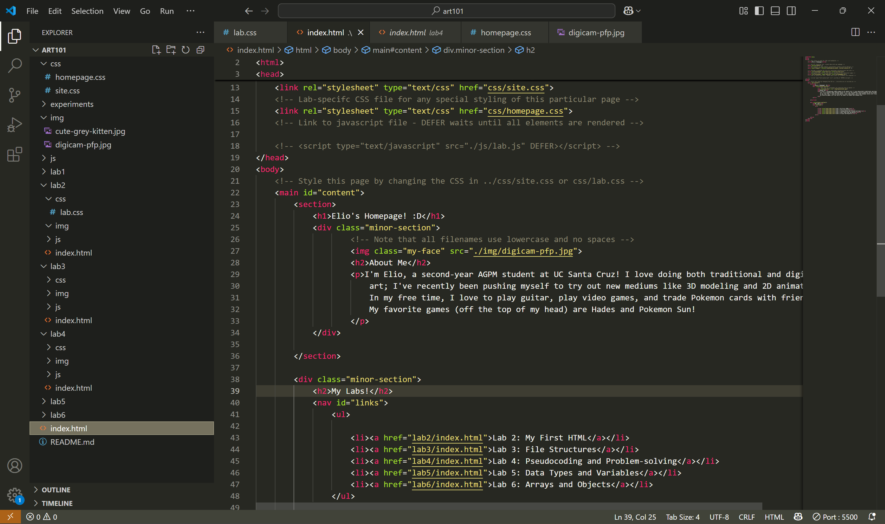

Lab 3 - File Structure and File Transfer
Challenge
The goal of the lab was to create a file structure within art101, create an index.html file and a CSS file to code my homepage, adding images to both the homepage and to the "Lab 3" page of my website, and publish the final product to Github.
Problems
The lab was pretty straightforward, so I didn't run into any major problems. The one semi-major problem I ran into was my image not showing up, but I asked a friend and I fixed it by moving the image to lab 3's img folder (instead of keeping it in art 101's img folder). Other than that, I mostly ran into minor formatting problems, which I was able to get through by testing different lines of code and opening it with Live Server to see what the final result might look like; I could then adjust code from there to get the desired result.
Reflection
It went well! I'm feeling more comfortable with HTML and CSS the more I do it, so the lab this time went a lot more smoothly. I'm sure it's also because today's lab was easier than the previous labs, but I had fun writing the code to create and customize my website.
Results
Here's a screenshot of my file structure for art101, shown in the bar on the side, and the code displayed is the HTML code for my homepage. :)
